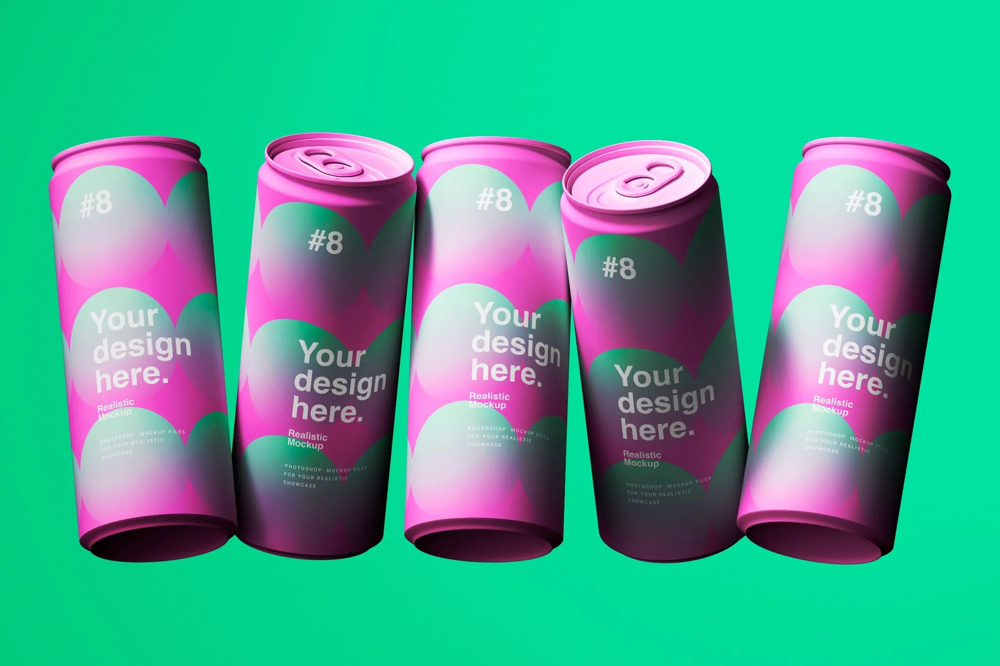

Anubhav New York, NY
My journey into digital storytelling has been a bit of a twisty adventure. It all started with a curiosity about coding and data analysis, but I soon realized that the same principles driving algorithms could also be used to create powerful, engaging stories that connect brands with their audiences.
I’ve learned that the magic happens when data and creativity come together. By using insights to optimize campaigns and crafting narratives that truly resonate, I’ve been able to help brands achieve real, measurable results.
As I continue this journey, my mission is to constantly blend strategy, technology, and creativity in new ways. I believe the best campaigns are the ones that adapt, embrace innovation, and stay focused on what matters most to the audience :)
Core Skills
Social Media Marketing
Expertise in SEO, SEM, and social media marketing strategies. Creating engaging campaigns that deliver results and enhance brand awareness across multiple platforms.
Content Strategy
Creating compelling content that inspires audience engagement and drives conversions through strategic planning and data-driven insights.
Brand Development
Building and maintaining strong brand identities through strategic planning, cohesive design, and consistent messaging across all channels.
Research and Analytics
Leveraging data-driven insights and advanced analytics tools to optimize strategies and drive impactful decisions.